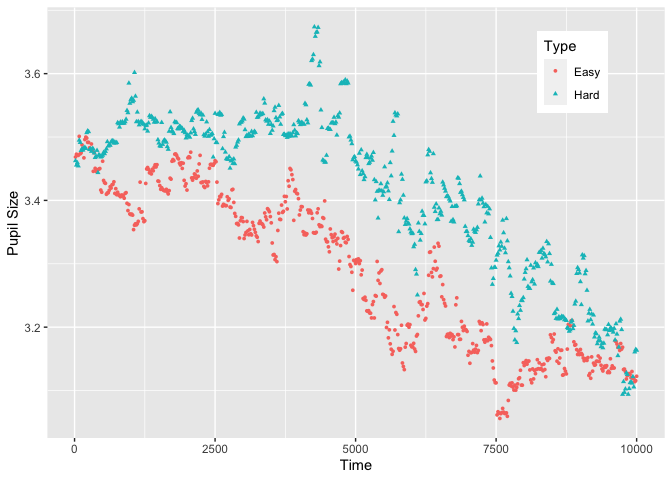

The goal of PupillometryR is to to pre-process and then analyze simple pupil experiments in R.
Installation
You can install the released version of PupillometryR from CRAN with:
install.packages("PupillometryR")
And the development version from GitHub with:
# install.packages("devtools") devtools::install_github("samhforbes/PupillometryR")
Setup
This package (and the example dataset) was designed in part, based on Sylvain Sirois’ MATLAB tutorial, which can be found here.
The intention is an integrated pipeline for pupillometric experiments, from data cleaning, pre-processing, various analysis techniques, and visualising results.
To use all the functionality and plots that follow from the PupillometryR pipeline, please start with make_pupillometryr_data, e.g.:
library(PupillometryR) #> Loading required package: dplyr #> #> Attaching package: 'dplyr' #> The following objects are masked from 'package:stats': #> #> filter, lag #> The following objects are masked from 'package:base': #> #> intersect, setdiff, setequal, union #> Loading required package: ggplot2 #> Loading required package: rlang data("pupil_data") #Check that IDs are not numeric pupil_data$ID <- as.character(pupil_data$ID) #remove participant number 8, who had problematic data pupil_data <- subset(pupil_data, ID != 8) #blinks were registered as -1, so replace with NAs pupil_data$LPupil[pupil_data$LPupil == -1] <- NA pupil_data$RPupil[pupil_data$RPupil == -1] <- NA Sdata <- make_pupillometryr_data(data = pupil_data, subject = ID, trial = Trial, time = Time, condition = Type)
All further functions associated with the package follow from there. For example:
plot(Sdata, pupil = LPupil, group = 'condition') #> Warning: Removed 3639 rows containing non-finite values (stat_summary).

To follow a detailed walkthrough, run:
vignette('PupillometryR')
Getting help
Please use the issues tab (https://github.com/samhforbes/PupillometryR/issues) to file any bugs or suggestions. For general pupillometry information, I recommend Sylvain’s website, as well as Jackson and Sirois (2009). For reading about using GAMs in pupillometry this paper by van Rij et al. is excellent, for general GAMs knowledge I recommend this tutorial by Michael Clark as well as the mgcv documentation, and for general FDA information this website is helpful, along with the Ramsay and Silverman book (1997). Additionally, check out the raincloud plots paper by Allen et al., which is used for some of the in-built plotting in this package.
Acknowledgements
This package has had suggestions, encouragement, and help from a number of people, but I wish to especially highlight Sylvain Sirois and Mihaela Duta, whose input has been instrumental. I’d also like to thank Jacolien van Rij for her input with the GAMs modelling portion of this tutorial, and TJ Mahr for contributing to extending the use of GAMs in the vignette.
References
1
Jackson, I., & Sirois, S. (2009). Infant cognition: Going full factorial with pupil dilation. Developmental Science, 12(4), 670-679. http://doi.org/10.1111/j.1467-7687.2008.00805.x
2
Allen, M., Poggiali, D., Whitaker, K., Marshall, T. R., & Kievit, R. (2019). Raincloud plots: a multi-platform tool for robust data visualization. Wellcome Open Research, 4, 1-41. http://doi.org/10.12688/wellcomeopenres.15191.1
3
Ramsay, J.O., & Silverman, B.W. (1997). Functional data analysis. New York: Springer-Verlag.
4
van Rij, J., Hendriks, P., van Rijn, H., Baayen, R. H., & Wood, S. N. (2019). Analyzing the time course of pupillometric data. Trends in Hearing, 23, 233121651983248. https://doi.org/10.1177/2331216519832483